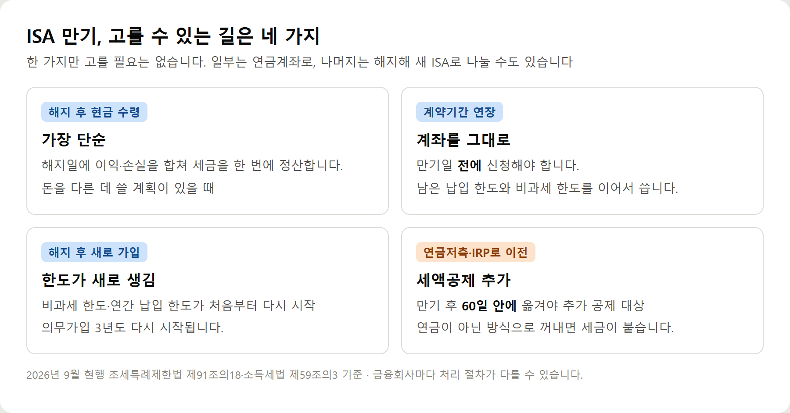
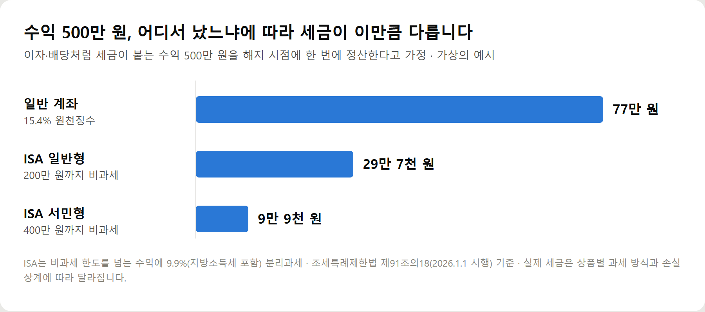
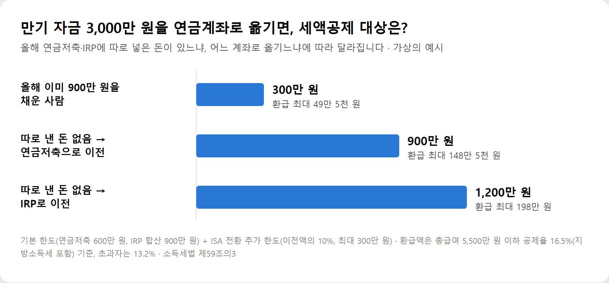

<meta charset="utf-8">
<title>ISA 만기 전 체크리스트 6가지와 자주 하는 실수 — 나의 투자 그리고 행복한 여행</title>
<meta name="description" content="ISA 만기 후 선택지는 해지·연장·재가입·연금저축/IRP 이전 네 가지입니다. 연장은 만기일 전, 연금계좌 이전은 만기일부터 60일 안에 해야 추가 세액공제(최대 300만원 한도)를 받습니다.">
<meta name="viewport" content="width=device-width, initial-scale=1">
<link rel="canonical" href="https://worldtraveler1.tistory.com/">
<link rel="preconnect" href="https://fonts.googleapis.com">
<link rel="preconnect" href="https://fonts.gstatic.com" crossorigin>
<link rel="stylesheet" href="https://fonts.googleapis.com/css2?family=Hahmlet:wght@400;600;800&family=IBM+Plex+Mono:wght@400;500&family=IBM+Plex+Sans+KR:wght@300;400;500;600&display=swap">

<style>
  :root{
    --paper:#F2EEE6;--surface:#FAF8F3;--surface-2:#E7E1D5;
    --ink:#191510;--ink-2:#4A4235;--ink-3:#7D7364;
    --line:#D6CEBF;--line-soft:#E4DDD0;--accent:#B06A15;--accent-bright:#C2761A;
    --up:#E5484D;--down:#3B82F6;
    --f-display:"Hahmlet",'Nanum Myeongjo',"Apple SD Gothic Neo",serif;
    --f-body:"IBM Plex Sans KR","Apple SD Gothic Neo","Malgun Gothic",sans-serif;
    --f-mono:"IBM Plex Mono","SFMono-Regular",Consolas,monospace;
    --pad:clamp(20px,5vw,64px);
  }
  @media (prefers-color-scheme:dark){
    :root:not([data-theme="light"]){
      --paper:#0B1120;--surface:#121A2C;--surface-2:#1A2439;
      --ink:#E9EEF7;--ink-2:#A9B5C9;--ink-3:#72809A;
      --line:#26314A;--line-soft:#1D2739;--accent:#E8A33D;--accent-bright:#F0B45C;
    }
  }
  *{box-sizing:border-box;}
  body{margin:0;background:var(--paper);color:var(--ink);font-family:var(--f-body);
    font-weight:300;font-size:1rem;line-height:1.75;-webkit-font-smoothing:antialiased;}
  a{color:inherit;}
  img{max-width:100%;height:auto;}
  .wrap{max-width:760px;margin:0 auto;padding-inline:var(--pad);}
  .nav{position:sticky;top:0;z-index:20;background:color-mix(in srgb,var(--paper) 88%,transparent);
    backdrop-filter:saturate(180%) blur(12px);border-bottom:1px solid var(--line);}
  .nav-in{display:flex;align-items:center;justify-content:space-between;height:58px;}
  .brand{font-family:var(--f-display);font-weight:600;font-size:1rem;letter-spacing:-.02em;text-decoration:none;}
  .back{font-family:var(--f-mono);font-size:.72rem;color:var(--ink-3);text-decoration:none;}
  .article{padding-block:clamp(40px,7vw,72px) clamp(56px,9vw,96px);}
  .eyebrow{font-family:var(--f-mono);font-size:.68rem;letter-spacing:.16em;text-transform:uppercase;
    color:var(--accent);margin:0 0 14px;}
  h1{font-family:var(--f-display);font-weight:800;font-size:clamp(1.6rem,4.4vw,2.3rem);
    line-height:1.3;letter-spacing:-.03em;margin:0 0 16px;}
  .byline{font-family:var(--f-mono);font-size:.72rem;color:var(--ink-3);
    padding-bottom:24px;border-bottom:1px solid var(--line);margin-bottom:32px;}
  h2{font-family:var(--f-display);font-weight:600;font-size:1.25rem;letter-spacing:-.02em;margin:42px 0 14px;}
  h3{font-family:var(--f-display);font-weight:600;font-size:1.05rem;letter-spacing:-.02em;
    margin:30px 0 10px;padding-top:14px;border-top:1px solid var(--line-soft);}
  h3 .code{font-family:var(--f-mono);font-size:.7rem;font-weight:400;color:var(--ink-3);margin-left:6px;}
  p{margin:0 0 18px;color:var(--ink-2);}
  ul.checks{margin:0 0 18px;padding-left:20px;color:var(--ink-2);}
  ul.checks li{margin-bottom:8px;font-size:.94rem;}
  table{width:100%;border-collapse:collapse;font-size:.88rem;margin-bottom:8px;}
  th{font-family:var(--f-mono);font-size:.66rem;letter-spacing:.06em;text-transform:uppercase;
    color:var(--ink-3);text-align:right;padding:8px 6px;border-bottom:1px solid var(--line);}
  th:first-child{text-align:left;}
  td{padding:10px 6px;border-bottom:1px solid var(--line-soft);color:var(--ink-2);}
  td.num{font-family:var(--f-mono);text-align:right;font-variant-numeric:tabular-nums;}
  td.up{color:var(--up);} td.down{color:var(--down);}
  .scroll{overflow-x:auto;}
  figure{margin:22px 0;}
  figure img{display:block;border-radius:3px;background:var(--surface-2);}
  figcaption{margin-top:8px;font-family:var(--f-mono);font-size:.68rem;color:var(--ink-3);text-align:center;}
  .note{margin-top:34px;padding:16px 18px;border-left:3px solid var(--accent);
    background:var(--surface);border-radius:0 3px 3px 0;}
  .note p{margin:0;font-size:.85rem;color:var(--ink-3);}
  .foot{border-top:1px solid var(--line);background:var(--surface);padding-block:30px 38px;}
  .foot p{margin:0;font-size:.8rem;color:var(--ink-3);}
</style>

<nav class="nav">
  <div class="wrap nav-in">
    <a class="brand" href="../index.html">나의 투자 그리고 행복한 여행</a>
    <a class="back" href="../index.html#stocks">← 시황으로</a>
  </div>
</nav>

<main class="wrap article">
  <p class="eyebrow">Market</p>
  <h1>ISA 만기 전 체크리스트 6가지와 자주 하는 실수</h1>
  <p class="byline">주식 · 2026-09-29 기준</p>

  <p><b>이 포스팅은 쿠팡 파트너스 활동의 일환으로, 이에 따른 일정액의 수수료를 제공받습니다.</b></p>
  <p><b>이 포스팅은 네이버 쇼핑 커넥트 활동의 일환으로, 판매 발생 시 수수료를 제공받습니다.</b></p>
  <p>한 줄 요약: 연장은 만기일 전, 연금 이전은 만기일부터 60일 안. 이 두 날짜만 놓치지 않으면 큰 실수는 피합니다.</p>
  <h2>ISA 만기 전 체크리스트</h2>
  <ul class="checks">
    <li>만기일 확인 — 계약기간 기준이며 3년이 아닐 수 있음</li>
    <li>누적 수익이 비과세 한도(일반 200만 원·서민형 400만 원)를 넘었는지</li>
    <li>3년 안에 쓸 돈인지, 노후 자금인지</li>
    <li>올해 연금저축·IRP 납입액</li>
    <li>연장할 거면 만기일 전에 신청</li>
    <li>연금계좌로 옮길 거면 만기일부터 60일 안에</li>
  </ul>
  <figure><figcaption>ISA 만기 후 선택지 네 가지 — 해지·연장·재가입·연금계좌 이전</figcaption></figure>
  <h2>자주 하는 실수</h2>
  <ul class="checks">
    <li>만기일이 지난 뒤 연장하려다 못 하는 경우 — 연장은 만기 전만 가능</li>
    <li>60일을 넘겨 연금계좌로 옮김 — 추가 세액공제(최대 300만 원 한도)를 놓침</li>
    <li>3년 전 해지 — 감면받은 세금을 추징당함 (납입 원금 범위 인출은 가능)</li>
    <li>곧 쓸 돈을 연금계좌로 옮김 — 55세 전 인출 시 16.5% 과세</li>
    <li>"2026년 한도 4천만 원" 글을 믿고 납입 계획 — 현행은 연 2천만 원·총 1억 원</li>
  </ul>
  <h2>숫자로 보면</h2>
  <figure><figcaption>수익 500만 원일 때 일반 계좌·ISA 일반형·ISA 서민형 세금 비교 (가상의 예시)</figcaption></figure>
  <figure><figcaption>ISA 만기 자금 3,000만 원을 연금계좌로 옮길 때 세액공제 대상 금액 (가상의 예시)</figcaption></figure>
  <p>두 차트 모두 가상의 예시입니다. 실제 금액은 소득, 상품 과세 방식, 올해 연금 납입액에 따라 달라집니다.</p>
  <h2>짧게 답하는 FAQ</h2>
  <p>Q. 3년만 채우면 만기 전에도 연금계좌로 옮길 수 있나요?</p>
  <p>됩니다. 가입 후 3년이 지나 연금계좌로 옮기면 그 시점을 만기로 봅니다.</p>
  <p>Q. 만기 자금 일부만 옮기고 나머지는 해지해도 되나요?</p>
  <p>됩니다. 전부든 일부든 가능하고, 추가 공제 한도는 옮긴 금액의 10%(최대 300만 원)로 계산합니다.</p>
  <p>Q. 세금은 언제 떼나요?</p>
  <p>해지일에 금융회사가 원천징수합니다. 따로 신고할 필요는 없습니다.</p>
  <p>Q. 2027년에 ISA가 바뀐다던데 기다려야 하나요?</p>
  <p>8월에 나온 개편안은 아직 정부안입니다. 국회 통과 여부와 기존 가입자 적용 방식이 정해지기 전이라, 만기 날짜는 지금 법 기준으로 챙기는 편이 안전합니다.</p>
  <div style="text-align:center;margin:30px 0"><a href="https://link.coupang.com/a/hq7nQzcePc" target="_blank" rel="nofollow sponsored noopener" style="display:inline-block;padding:15px 28px;background:#E34948;color:#fff;font-weight:700;font-size:18px;text-decoration:none;border-radius:8px"><b>▶ 쿠팡에서 보기 — 마법의 연금 굴리기 — 연금저축·IRP·ISA 절세 삼총사 (김성일, 에이지21)</b></a></div>
  <div style="text-align:center;margin:30px 0"><a href="https://naver.me/xllxI2HU" target="_blank" rel="nofollow sponsored noopener" style="display:inline-block;padding:15px 28px;background:#E34948;color:#fff;font-weight:700;font-size:18px;text-decoration:none;border-radius:8px"><b>▶ 네이버에서 보기 — 아이비스 포켓 가계부 (돈 관리·예산 관리)</b></a></div>
  <h2>참고자료</h2>
  <ul class="checks">
    <li>조세특례제한법 제91조의18(개인종합자산관리계좌에 대한 과세특례), 시행 2026.1.1</li>
    <li>조세특례제한법 제129조의2(저축지원을 위한 과세특례 제한)</li>
    <li>소득세법 제59조의3(연금계좌세액공제) 제3항</li>
    <li>국세청 서면-2023-원천-2255 (2024.2.7) — ISA 만기 전환금액의 과세 제외</li>
    <li>정부 2026년 세제개편안 (2026.8.3 발표, 국회 심의 전)</li>
  </ul>
  <div class="note"><p>이 글은 2026년 9월 현행 조세특례제한법·소득세법을 기준으로 정리한 일반 정보이며, 특정 금융상품의 가입이나 매매를 권하지 않습니다. 계산 예시는 이해를 돕기 위한 가상의 예시이고, 실제 세금과 공제액은 소득·상품·금융회사 처리 방식에 따라 달라집니다. 결정 전에 가입한 금융회사나 국세청(126)에 확인하세요.</p></div>
  <p style="font-size:12px;color:#999;line-height:1.6;margin-top:36px">이 포스팅은 쿠팡 파트너스 활동의 일환으로, 이에 따른 일정액의 수수료를 제공받습니다.</p>
  <p style="font-size:12px;color:#999;line-height:1.6;margin-top:36px">이 포스팅은 네이버 쇼핑 커넥트 활동의 일환으로, 판매 발생 시 수수료를 제공받습니다.</p>
</main>

<footer class="foot">
  <div class="wrap"><p>나의 투자 그리고 행복한 여행 · 투자 판단의 참고 자료일 뿐, 매수·매도를 권유하지 않습니다.</p></div>
</footer>
